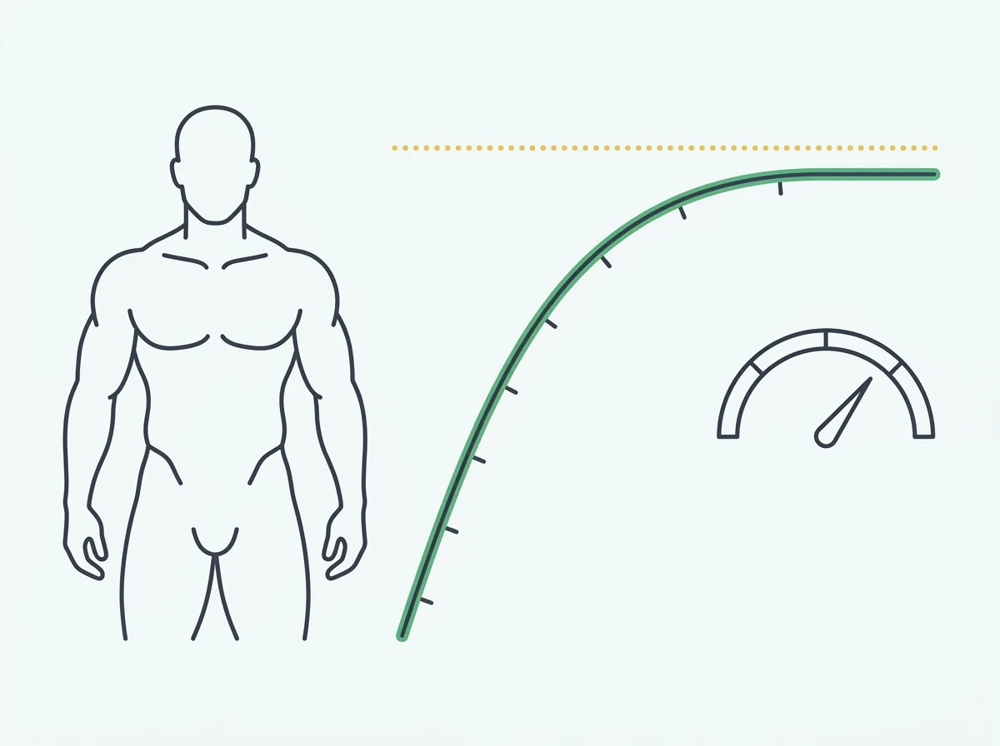

Natty Limit: How Big Can You Get Naturally? (With Real Numbers)
The natty limit isn't a wall you hit — it's a curve that progressively flattens. Here's the FFMI-based framework for understanding where it sits, how long it takes to approach it, and how to actually tell where you are on the curve right now.

What Is the Natty Limit?
The "natty limit" is the maximum amount of muscle mass a natural (non-enhanced) person can build and maintain, given their height, bone structure, and genetics. It's not a precise number and it's not the same for everyone — but research gives us a reliable ceiling for most people, and a metric for tracking how close you are to it.
The short answer: most natural male lifters will max out around FFMI 22–24. Elite genetic outliers can reach 25. Research strongly suggests FFMI above 26 is virtually impossible to achieve naturally. For women, the ceiling is lower — around FFMI 20–22.
But the more important insight is this: the natty limit isn't something you hit. It's something you asymptotically approach over years. The question isn't "have I hit my limit?" — it's "how fast are my gains slowing, and what does that tell me about where I am on the curve?"
The FFMI Framework: Why This Is the Right Metric
Before getting into specific numbers, understand why FFMI (Fat-Free Mass Index) is the right tool for this discussion — and why talking about "maximum weight" or "maximum size" without FFMI is nearly useless.
FFMI normalizes lean muscle mass for height. A 5'8" man with 190 lbs of lean mass and a 6'2" man with 220 lbs of lean mass can have identical FFMI values — because height determines how much muscle your frame can structurally support. The natty limit is a ceiling on FFMI, not a ceiling on pounds.
FFMI formula
FFMI = (Lean Mass in kg) ÷ (Height in meters)²
A 180 lb man (82 kg) at 5'10" (1.78m) with 15% body fat has about 152 lbs lean mass (69 kg). His FFMI = 69 ÷ (1.78)² = 21.8. That puts him in the advanced natural range — well-trained but with meaningful room before approaching his genetic ceiling.
The landmark study: Kouri et al. (1995) compared FFMI distributions across steroid users and lifetime natural athletes. Nearly all natural athletes — even the best-developed — clustered below FFMI 25. The vast majority fell between 18–23. Above 25.5, steroids were essentially universal.
The FFMI Zones: Where Do You Fall?
| FFMI (Men) | Zone | What it means | Typical training age |
|---|---|---|---|
| Below 18 | Beginner / Untrained | Meaningful muscle gain still accessible with basic progressive overload | 0–18 months |
| 18–20 | Intermediate | Visibly muscular; gains still coming but noticeably slower than year one | 1–3 years |
| 20–22 | Advanced | Well-developed physique; gains measurable in months, not weeks | 3–6 years |
| 22–24 | Elite Natural | Approaching natural ceiling; most naturals peak here; annual gains very small | 6–10+ years |
| 24–25 | Natural Ceiling | Top 1–2% of natural development; exceptional genetics; gains nearly imperceptible year-to-year | 10+ years |
| Above 25.5 | Statistically Enhanced | Kouri et al. found this range nearly impossible to achieve without enhancement | — |
| FFMI (Women) | Zone |
|---|---|
| Below 15 | Beginner / Untrained |
| 15–17 | Intermediate — visibly fit |
| 17–19 | Advanced — well-developed musculature |
| 19–21 | Elite Natural female athlete |
| Above 21–22 | Statistically atypical for natural women |
These ranges should be read as distributions, not hard lines. Genetics vary. Someone with exceptional genetics and 15+ years of consistent, high-quality training might reach FFMI 25. Most well-trained naturals peak in the 21–23 range.
How Long Does It Take to Approach the Natty Limit?
Significantly longer than most gym content implies. Here's the research-based framework for natural muscle gain rates (based on Aragon's work and subsequent studies):
| Training stage | Monthly lean mass gain rate | Annual potential |
|---|---|---|
| Beginner (Year 1) | 1–2% of body weight in lean mass | 15–25 lbs |
| Intermediate (Year 2–3) | 0.5–1% of body weight | 8–15 lbs |
| Advanced (Year 4–6) | 0.25–0.5% of body weight | 4–8 lbs |
| Elite (Year 6+) | 0.1–0.25% of body weight | 1–4 lbs |
| Near ceiling | <0.1% of body weight | <1–2 lbs |
The math on reaching elite natural status: starting from untrained, gaining 20 lbs of lean mass in year one, 12 in year two, 8 in year three, 5 in year four, 3 in year five — you're looking at roughly 5–8 years of consistent, quality training to approach FFMI 22–23 for most male physiques. The last 1–2 FFMI points after that can take another 5+ years.
This is why the "just eat in a surplus and lift heavy" advice from beginner stages stops working by year three or four. The rate-limiting factor shifts from training stimulus to genetic ceiling proximity.
How to Tell If You're Approaching Your Natty Limit
There are three reliable signals that you're in the advanced-to-elite zone, approaching your genetic ceiling:
Gain rate has slowed dramatically
You're measuring lean mass gains in pounds per year, not per month. Bulks produce mostly fat with very little muscle. Cuts reveal the same amount of muscle underneath as before.
Training age is 6+ years
If you've been training consistently with good programming for 6+ years, you're likely in the advanced-to-elite zone regardless of how you feel about your physique.
FFMI is 21+
At FFMI 21–22, you're in the advanced natural zone. Gains from here require exceptional consistency, nutrition precision, and patience — not just effort.
The signal that actually matters: FFMI trend rate
The most reliable indicator of ceiling proximity is how fast your FFMI is moving over time. This is where tracking FFMI consistently — not just body fat or scale weight — gives you data that nothing else does.
- If your FFMI moved from 18 to 20 over the past year: you're firmly in the intermediate zone with significant room ahead
- If your FFMI moved from 21 to 21.4 over the past year: you're advanced and slowing down noticeably
- If your FFMI has been 22.8 for the past two years regardless of what you do in the gym: you're likely in the elite zone approaching your ceiling
You can't answer this question by looking at yourself in the mirror. You need consistent measurements over time. This is exactly what GainFrame tracks — FFMI at every check-in, plotted over your history, so you can see the rate of change instead of guessing.

GainFrame tracks your FFMI at every check-in. If the trend rate is flattening, that's data — not a feeling.
The Genetics Question: Does the Natty Limit Vary Person to Person?
Yes, meaningfully. The ranges above describe the population distribution — most people land in a certain band, but individuals vary. Factors that affect your specific ceiling:
| Factor | Effect on natty limit |
|---|---|
| Testosterone genetics | Higher natural testosterone (within normal range) = more muscle-building capacity. Some men naturally produce 2–3× as much testosterone as others. |
| Muscle fiber type distribution | Higher ratio of fast-twitch fibers correlates with greater hypertrophy potential |
| Bone structure and frame size | Wider clavicles and longer muscle bellies = higher apparent FFMI ceiling |
| Myostatin regulation | Lower myostatin = more muscle growth permitted. Extremely rare myostatin mutations produce dramatic muscle mass in children born with them. |
| Training efficiency | How well you respond to training stimulus (satellite cell activity, anabolic signaling) varies significantly between individuals |
The practical implication: don't use someone else's physique to benchmark your ceiling. The 6'1" powerlifter at FFMI 24 may represent 8 years of elite-level training for him. The same FFMI might be your ceiling too, or it might be well beyond it, depending on your genetics.
What you can control: tracking your own rate of progress over time, optimizing the inputs (training, nutrition, sleep, consistency), and making peace with the fact that the ceiling is genetic — not a personal failing.
What to Do When You're Near Your Natty Limit
This is where the gym content falls apart — everything is optimized for beginners in the "linear gains" phase. Here's what actually applies to advanced lifters:
Stop bulking aggressively
At FFMI 21+, an aggressive bulk mostly adds fat. The muscle gain rate is so slow that the calorie surplus required to meaningfully accelerate it would put you in a poor body fat range. Modest surplus (200–300 calories) or recomp is more effective for most advanced naturals.
Optimize lagging muscle groups
Near the ceiling, the total FFMI number matters less than the distribution. If your physique score is held down by a specific lagging group (common: rear delts, arms, lower chest), targeted specialization can produce visible change even when overall FFMI isn't moving.
Optimize body fat, not muscle mass
Many advanced naturals are carrying 18–22% body fat and think they need more muscle. They don't — they need to reveal what's there. Getting from 20% to 12% body fat while maintaining lean mass produces a dramatically better physique at the same absolute FFMI. This is why body fat % matters alongside FFMI, not instead of it.
Track with the right metrics
Scale weight becomes almost completely uninformative near the natty limit. A 2 lb scale increase during a bulk might be 0.5 lbs of muscle and 1.5 lbs of fat — and you can't tell without measuring body composition. Tracking FFMI and body fat % together gives you the signal that scale weight hides. Read more about why the scale misleads.

At FFMI 22.1, this lifter is in the advanced natural zone. The 12 muscle group scores reveal which areas to prioritize — information that FFMI alone doesn't give you.
Common Natty Limit Questions
Can I tell just by looking at someone if they're enhanced?
Sometimes — but less reliably than Reddit threads would have you believe. A well-lit photo, a pump, specific poses, and lean body fat all make natural physiques look more enhanced than baseline. FFMI is the only metric that cuts through this. A physique at FFMI 24 in competition condition looks dramatic. The same physique at 18% body fat looks ordinary. The muscle is the same — the reveal changes everything.
Conversely, someone who looks big in a T-shirt at 20% body fat might be FFMI 21. The "he must be on something" impression often evaporates when body fat is accounted for.
What about "enhanced naturals" — test boosters, prohormones, SARMs?
The natty limit as described here assumes no exogenous hormones or hormone-like compounds. SARMs, prohormones, and testosterone replacement therapy all meaningfully shift the ceiling — they're not "natural" for this analysis regardless of their legal status. The Kouri threshold holds for people with truly endogenous hormone profiles.
Does the natty limit decline with age?
Yes, eventually. Testosterone declines gradually after the mid-30s, and the rate of muscle protein synthesis slows. However, well-trained advanced lifters can maintain FFMI well into their 40s and 50s with consistent training, adequate protein (1.6–2.2g/kg of body weight daily), and sleep. The ceiling is lower for a 50-year-old than a 25-year-old, but the difference is often smaller than expected for people who've maintained training consistency.
Is it worth training naturally if the limit is "only" FFMI 24?
This question reveals a common misconception: that FFMI 24 isn't impressive. It's remarkable. An FFMI 24 physique at 10% body fat represents an exceptional natural development that the vast majority of gymgoers will never reach in their lifetime, even with decades of training. Most people who train consistently for five years will be genuinely satisfied with where they end up at FFMI 20–22 — it's a strong, developed physique that's dramatically different from untrained.
How to Actually Track Where You Are
The natty limit conversation is usually theoretical — people estimate FFMI from photos or rough body fat guesses and make inferences. The accurate approach:
Get a consistent body fat estimate
FFMI requires knowing your lean mass, which requires a body fat estimate. Calipers, DEXA, or AI photo-based tools (with consistent photo conditions) all work. The method matters less than the consistency — use the same method every time.
Calculate FFMI at regular intervals
Monthly or quarterly is sufficient for advanced lifters. At this stage, changes are slow enough that more frequent tracking creates noise rather than signal. Track FFMI at the same body fat range — comparing FFMI at 20% body fat to FFMI at 12% body fat isn't apples-to-apples.
Watch the rate of change, not the number
An FFMI of 21.5 is less informative than knowing your FFMI has increased 0.8 points in the past 12 months (still meaningful gains) versus 0.1 points (approaching ceiling). The trend line is the data.
The simplest approach: use GainFrame
Every GainFrame check-in automatically calculates your FFMI alongside body fat %, physique score, and 12 muscle group ratings. Over time, your FFMI history becomes a chart — and that chart tells you more about your training progress and ceiling proximity than any single measurement ever will. See the FFMI chart and what your number means.
Track Your FFMI Over Time
Know where you are on the natty curve — not a guess, a number. GainFrame calculates your FFMI at every check-in so you can see the trend rate instead of asking Reddit.
Download GainFrame Free